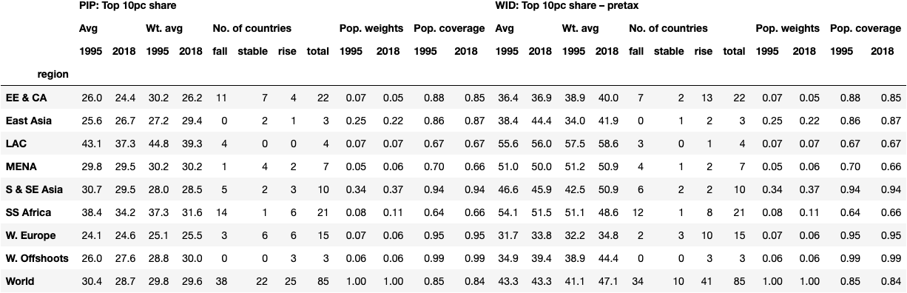

Triangulating a global view on inequality
Concepts
Three concepts of global inequality (not quite Milanovic 2007; or Anand and Segal 2015)
1*. Average within-country inequality
2*. Average within-country inequality, weighting by population
- Inequality across the world population taken as a whole
- Future work
- Inequality across the world population taken as a whole
We will be looking at:
- Income(ish) inequality, not wealth
- Relative inequality, not absolute
Why do we need a global view?
- Understanding the winners and losers of globalization and economic growth
- “We’re fighting for Main Street, not Wall Street. We have rejected globalism and embraced patriotism.” - Donald Trump, Aug 2020
- To inform national policy to address inequality – both opportunities and limits
- To inform international policy to address inequality (financial reporting transparency, tax havens, global taxation, migration, aid…)
- A reflection of cosmopolitan values and outlook (e.g. UN’s SDGs)
- As a guide to ‘Effective Altruism’, including charitable giving
A clear global view is lacking
- Limitations in the available data
- Coverage
- Quality and comarabilty within secondary databases (Anthony B. Atkinson and Brandolini 2001)
- Much improved recently!
- Expanded coverage of harmonized secondary databases: World Bank’s Poverty and Inequality Platform (PIP), World Inequality Database (WID), Luxembourg Income Study (LIS)
- Different conceptual focus in richer and poorer countries
- Income inequality/relative poverty in high income countries
- Absolute poverty in poorer countries
- Much improved recently!
- Atkinson commission (2016); ‘Societal poverty’ – (World Bank 2018); UN SDGs; expansion of WID coverage
- Different ‘worlds’ of measurement
- Many methodological differences between different global databases, often bundled together
- Yield very different take-home messages about inequality and how it has evolved
- Many methodological differences between different global databases, often bundled together
Different ‘worlds’: World Inequality Database
In recent decades, income inequality has increased in nearly all countries, but at different speeds… (Alvaredo et al. 2018)
Different ‘worlds’: World Inequality Database
The vast majority of global inequality (concept 3) is now due to differences within countries.
Different ‘worlds’: World Bank, Poverty and Inequality Platform
[Since c.1993] the number of countries with rising inequality was slightly higher than the number of countries with falling inequality. Yet, the average Gini among these 91 countries actually declined. (Poverty and Shared Prosperity 2016: Taking on Inequality 2016)
Different ‘worlds’: World Bank, Poverty and Inequality Platform
The vast majority of global inequality (concept 3) remains due to differences between countries.

Different ‘worlds’
In terms of data availability, quality and comparability, we are in a better position than ever.
Yet some of the most basic questions are still open:
- Is rising inequality within countries a near-ubiquitous, global phenomenon?
- WID: Yes
- PIP: No
- Where do global inequalities lie: in differences between richer and poorer countries, or in differences between richer and poorer people within countries?
- WID: Within countries
- PIP: Between countries
Different methodologies
The different ‘worlds’ are separated by many methodological differences, often bundled together:
- Inequality indices (and focal points in the distribution)
- WID: Focus on the top
- PIP: Focus on overall inequality (e.g. Gini)
- Welfare concepts
- WID: Focus on (and greatest coverage for) pre-tax national income
- PIP: mix of disposable income and consumption
Different methodologies
- Underlying data sources
- WID: Tax + NA + survey
- PIP: survey only
- Methodologies
- WID: Adjustments for misisng top in survey data, Scaling to national accounts aggregates
- PIP: Some ex-post harmonization of welfare concepts
- Coverage
- Differences across the two datasets, impacting the time period that can be analysed
Connecting up these ‘worlds’ is a low-hanging fruit…
For policy and public debate
- The data is better than ever
- But the two ‘worlds’ of measurement makes the current data terrain very confusing
- Example: a summary of inequality trends from the UN.
Connecting up these ‘worlds’ is a low-hanging fruit…
For academic research
- Existing studies tend to be based on only one ‘world’
- Flagship reports of the two institutions (Chancel et al. 2021; World Bank 2022)
- Kanbur et al. (2022)
- Niño-Zarazúa et al. (2017)
- van Zanden et al. (2014)
- Ravallion(2014)
- Two notable counter-examples:
- Anand and Segal (2015)
- Adjusts survey data to match WTID top income shares (with fairly small effect)
- Estimtates up to 2005
- Lakner and Milanovic (2016)
- Adjusts survey data to match WTID top income shares (with fairly small effect)
- Only considers impact on overall global inequality
- Estimates up to 2008
- Neither focus on average within-country trends (Concepts 1* and 2* above)
- Coverage in the WID data has expanded subsequently
- Anand and Segal (2015)
Connecting up the ‘worlds’
Connecting up the ‘worlds’
- Line up what we can:
Coverage and time period
- 1995 vs 2015 (+/-3) – good coverage
- 1980 vs 2018 (+/-5) – much worse coverage, more relevant period
Inequality indices
Income concept
- Very cursory glance (unlike Yonzan et al. 2022; Carranza, Morgan, and Nolan 2022)
Connecting up the ‘worlds’
- Triangulate
- Pinpoint what we don’t know; what is behind the differences:
- Particular countries?
- Particular methodological differences?
- Gather together what we do know, irrespecive of the many remaining differences
- Pinpoint what we don’t know; what is behind the differences:
Coverage
Coverage gets very good in both datasets from ~1990.
Coverage gets very good in both datasets from ~1990.
We can increase ‘coverage’ in 1980 by widening the net.
We can increase ‘coverage’ in 1980 by widening the net.
1995 vs 2015

- Country coverage drops (less so population-weighted)
- Drop in coverage not uniform across regions and source (LAC and SS Africa in PIP)
Key differences:
- Inequality is far higher in WID than PIP
- A very substantial rise in the pop-weighted average in WID.
Key similarities:
- Rising vs falling: approx. equal in both sources
- Unweighted avg approx. stable in both (a fall in PIP)
- Weighted average less benign trend than unweighted average
- More countries below than above the line
- For the majority of countries the gap is not huge (28/79 > 2 pt. difference; 20/79 > 4 pt. difference)
- Very large differences in a small number of coutries – which happen to be very populous
Top 1 vs Top 10?
- Differences for some individual countries – LAC
- But for other regions, and globally, the story over time is very similar.
1980 vs 2018
- Even before aligning coverage, the country coverage drops substantially for both datasets - so too does population coverage
- In WID a substantial rise in the unweighted average; none in PIP
- A huge rise in weighted average in WID; small rise in PIP
- PIP is the binding constraint on coverage: almost no EE & CA coverage; half the number of W. European countries.
- Very few countries available in both datasets for this period (though population coverage falls less)
- Aligning coverage does bring the datasets somewhat closer:
- smaller rise in global unweighted average in WID
- more balanced split between rise and fall
- But the stark difference remains: a huge rise in weighted average in WID
- For those countries with data from both PIP and WID, the majority tell a surprisingly similar story about change over time.
- Only for a small number are there very large differences – this includes a number of populous countries: India, China, US, Mexico
Top 1 vs Top 10?

- Much more divergence visible than for 1995-2015 period – especially population-weighted
- Average top 1% doubled, or nearly, in S & SE Asia, East Asia and W. Offshoots. EE & CA quadrupled.

- This remains true even after aligning coverage with PIP.
Welfare concept & methods
LIS pre- and post-tax data

- Very low coverage
- For W. Europe and W. Offshoots we do see some divergence between pre- and post- tax inequality.
WID pre- vs post-tax data

- Again very low coverage
- For both EE & CA and W. Europe, quite a similar story in pre- and post-tax trends – albeit huge rises within EE & CA.
Individual countries
- In the US, similar trends across survey and WID 1975-1995
- Some divergence thereafter between pre- and post-tax series - also in LIS survey data
- Very strong divergence of WID series (both pre- and post-tax) 1995 onwards.
- In Russia, huge uncertainty concerning the extent and duration of rising inequality over transition.
- Quality of the data subject to a lot of discussion (Milanovic 1998; Novokmet, Piketty, and Zucman 2018; Anthony Barnes Atkinson, Micklewright, and Micklewright 1992)
- More agreement from mid-2000s
In Mexico (and other LAC countries) WID is using a linear interpolation between decadal estimates prior to ~2000.
This relates to methods (tax data, top adjustments) rather than income concept.
- Similar in Brazil, except WID goes with the survey data after 2000.
- In India, only two survey available in LIS.
- Some divergence between pre- and post- tax inequality in the LIS data, but tiny compared to the divergence of WID pre-tax.
- Note PIP data relates to consumption
- A period of particular divergence between national accounts and survey data (Deaton 2005; Sandefur 2022)
- In China, some divergence of pre- and post-tax nequality apparent in LIS survey data
- Very condensed period of divergence in WID between 2000-2005
- Again substantial divergence between national accounts and survey means over this time (Deaton 2005)
- Nigeria – WID seems not to account for 1996 survey in which inequality apparently peaked.
- Breaks in comparability noted by the World Bank – see this Our World in Data chart.
Triangulating the key facts of global inequality
Concept 1* and 2*
Since 1995:
Key differences:
- Strong rise in the population-weighted average level of inequality (Concept 2*) in WID that is absent in PIP.
Key similarities:
- For a majority of countries, trends look quite similar across PIP and WID.
- Inequality in the average country was roughly flat, with roughly as many coutries with rising inequality as with falling inequality
- Inequality was rising particularly strongly in some very populous countries, bringing up the trend in the weighted average
- Different indices – even a focus on the very top – paint very similar pictures overall.
Since 1980
Key differences:
- Significant rise in unweighted average inequality (Concept 1*) in WID that is absent in PIP.
- Huge rise in the population-weighted average level of inequality (Concept 2*) in WID that is much more muted in PIP.
- Stronger differences looking at the very top
Key similarities
- Amongst those (few) countries with data in both PIP and WID, trends look quite similar for a majority of countries.
- Inequality was rising particularly strongly in some very populous countries, bringing up the trend in the weighted average
Lessons (Concept 3)
The global picture – when weighting by population – is greatly affected by a small number of populous countries. Trends diverge substantialy between PIP and WID for a number of these.
These larger discrepancies in trends relate to methodological choices, adjustment procedures etc. – the income concept plays a minor role at most.
The fact that these large differences are a (substantial) minority of cases suggests they may reflect idiosynctratic data quality or methodological issues specific to these countries – and not just a general issue of the ‘the missing top’.
- Some examples of possibly idiosyncratic issues demonstrated above
Room for the two worlds be more proactively connecting up and explaining divergences – particularly in these cases where there are large discrepencies and large populations.
Analysis of global inequality trends – when weighting by population – should factor in this potential sensitivity to localised data issues
- Something not currently done in the literature on global inequality
- Future work!
Appendix
Countries only found in one source - 1995 vs 2015
PIP only
WID only
Countries only found in one source - 1980 vs 2018
PIP only
WID only
Ex-slide graveyard
Different ‘worlds’: WID
Different ‘worlds’: World Bank PIP
Different worlds: a comparison
Aligning inequality indices
, not so sensitive to top [Osberg…]
Observations - All very similar - MENA is interesting.
Find countries where the measures moved in different directions… Plot them (the whole time series.)

Observations - All very similar - LAC – reverses trend among small number of countries
Find countries where the measures moved in different directions… Plot them (the whole time series.)
General relationship – regression
Take home message isn’t all that dependent on the measure - Concern that Gini misses what’s happening at the extremes. - In individual cases there can be important differences - But looking globally it’s less of an issue.
Alternative spec - +/-5 years

